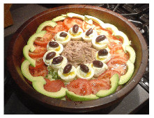
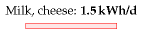
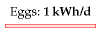
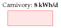
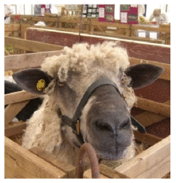
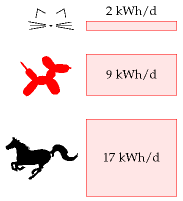
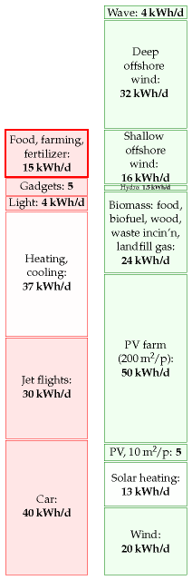

13 Food and farming

Figure 13.1. A salad Niçoise.
Modern agriculture is the use of land to convert petroleum into food.
Albert Bartlett
Figure 13.2. Minimum energy requirement of one person.

Figure 13.3. Milk and cheese.
We’ve already discussed in Chapter 6 how much sustainable power could be produced through greenery; in this chapter we discuss how much power is currently consumed in giving us our daily bread.
A moderately active person with a weight of 65 kg consumes food with a chemical energy content of about 2600 “Calories” per day. A “Calorie,” in food circles, is actually 1000 chemist’s calories (1 kcal). 2600 “Calories” per day is about 3 kWh per day. Most of this energy eventually escapes from the body as heat, so one function of a typical person is to act as a space heater with an output of a little over 100 W, a medium-power lightbulb. Put 10 people in a small cold room, and you can switch off the 1 kW convection heater.
How much energy do we actually consume in order to get our 3 kWh per day? If we enlarge our viewpoint to include the inevitable upstream costs of food production, then we may find that our energy footprint is substantially bigger. It depends if we are vegan, vegetarian or carnivore.
The vegan has the smallest inevitable footprint: 3 kWh per day of energy from the plants he eats.
The energy cost of drinking milk
I love milk. If I drinka-pinta-milka-day, what energy does that require? A typical dairy cow produces 16 litres of milk per day. 1 So my one pint per day (half a litre per day) requires that I employ 1⁄32 of a cow. Oh, hang on – I love cheese too. And to make 1 kg of Irish Cheddar takes about 9 kg of milk. So consuming 50 g of cheese per day requires the production of an extra 450 g of milk. OK: my milk and cheese habit requires that I employ 1⁄16 of a cow. And how much power does it take to run a cow? Well, if a cow weighing 450 kg has similar energy requirements per kilogram to a human (whose 65 kg burns 3 kWh per day) then the cow must be using about 21 kWh/d. Does this extrapolation from human to cow make you uneasy? Let’s check these numbers: www.dairyaustralia.com.au says that a suckling cow of weight 450 kg needs 85 MJ/d, which is 24 kWh/d. Great, our guess wasn’t far off! So my 1⁄16 share of a cow has an energy consumption of about 1.5 kWh per day. This figure ignores other energy costs involved in persuading the cow to make milk and the milk to turn to cheese, and of getting the milk and cheese to travel from her to me. We’ll cover some of these costs when we discuss freight and supermarkets in Chapter 15.
Eggs
A “layer” (a chicken that lays eggs) eats about 110 g of chicken feed per day. Assuming that chicken feed has a metabolizable energy content of 3.3 kWh per kg, that’s a power consumption of 0.4 kWh per day per chicken. Layers yield on average 290 eggs per year. So eating two eggs a day requires a power of 1 kWh per day. Each egg itself contains 80 kcal, which is about 0.1 kWh. So from an energy point of view, egg production is 20% efficient.

Figure 13.4. Two eggs per day.

Figure 13.5. Eating meat requires extra power because we have to feed the queue of animals lining up to be eaten by the human.
The energy cost of eating meat
Let’s say an enthusiastic meat-eater eats about half a pound a day (227 g). (This is the average meat consumption of Americans.) To work out the power required to maintain the meat-eater’s animals as they mature and wait for the chop, we need to know for how long the animals are around, consuming energy. Chicken, pork, or beef?
Chicken, sir? Every chicken you eat was clucking around being a chicken for roughly 50 days. So the steady consumption of half a pound a day of chicken requires about 25 pounds of chicken to be alive, preparing to be eaten. And those 25 pounds of chicken consume energy.
Pork, madam? Pigs are around for longer – maybe 400 days from birth to bacon – so the steady consumption of half a pound a day of pork requires about 200 pounds of pork to be alive, preparing to be eaten.
Cow? Beef production involves the longest lead times. It takes about 1000 days of cow-time to create a steak. 2 So the steady consumption of half a pound a day of beef requires about 500 pounds of beef to be alive, preparing to be eaten.
To condense all these ideas down to a single number, let’s assume you eat half a pound (227 g) per day of meat, made up of equal quantities of chicken, pork, and beef. 3 This meat habit requires the perpetual sustenance of 8 pounds of chicken meat, 70 pounds of pork meat, and 170 pounds of cow meat. That’s a total of 110 kg of meat, or 170 kg of animal (since about two thirds of the animal gets turned into meat). And if the 170 kg of animal has similar power requirements to a human (whose 65 kg burns 3 kWh/d) then the power required to fuel the meat habit is
\[ \text{170\ kg} \times \frac{\left. \text{3\ kWh}/\text{d} \right.}{\text{65\ kg}} \simeq \left. \text{8\ kWh}/\text{d} \right. \]
I’ve again taken the physiological liberty of assuming “animals are like humans;” a more accurate estimate of the energy to make chicken is in this chapter’s endnotes. 4 No matter, I only want a ballpark estimate, and here it is. The power required to make the food for a typical consumer of vegetables, dairy, eggs, and meat is 1.5 + 1.5 + 1 + 8 = 12 kWh per day. (The daily calorific balance of this rough diet is 1.5 kWh from vegetables; 0.7 kWh from dairy; 0.2 kWh from eggs; and 0.5 kWh from meat – a total of 2.9 kWh per day.)

Figure 13.6. Will harvest energy crops for food.
This number does not include any of the power costs associated with farming, fertilizing, processing, refrigerating, and transporting the food. We’ll estimate some of those costs below, and some in Chapter 15.
Do these calculations give an argument in favour of vegetarianism, on the grounds of lower energy consumption? It depends on where the animals feed. Take the steep hills and mountains of Wales, for example. Could the land be used for anything other than grazing? Either these rocky pasturelands are used to sustain sheep, or they are not used to help feed humans. You can think of these natural green slopes as maintenance-free biofuel plantations, and the sheep as automated self-replicating biofuel harvesting machines. The energy losses between sunlight and mutton are substantial, but there is probably no better way of capturing solar power in such places. (I’m not sure whether this argument for sheep-farming in Wales actually adds up: during the worst weather, Welsh sheep are moved to lower fields where their diet is supplemented with soya feed and other food grown with the help of energy-intensive fertilizers; what’s the true energy cost? I don’t know.) Similar arguments can be made in favour of carnivory for places such as the scrublands of Africa and the grasslands of Australia; and in favour of dairy consumption in India, where millions of cows are fed on by-products of rice and maize farming.
On the other hand, where animals are reared in cages and fed grain that humans could have eaten, there’s no question that it would be more energy-efficient to cut out the middlehen or middlesow, and feed the grain directly to humans.

Figure 13.7. The power required for animal companions’ food.
Fertilizer and other energy costs in farming
The embodied energy in Europe’s fertilizers is about 2 kWh per day per person. 5 According to a report to DEFRA by the University of Warwick, farming in the UK in 2005 used an energy of 0.9 kWh per day per person 6 for farm vehicles, machinery, heating (especially greenhouses), lighting, ventilation, and refrigeration.
The meat assumption, and the gas inside the fertilizer
A section added in the 2026 revision. Two numbers in this chapter deserve revisiting: one that was wrong when it was written, and one that turned out to mean far more than it appeared to.
He assumed more than twice the meat anyone eats
The chapter’s largest single food item is meat, at 8 kWh/d, and it rests on one sentence: “let’s assume you eat half a pound (227 g) per day of meat”.
In the same year the book was published, the National Diet and Nutrition Survey measured what British people actually ate. The average was 103.7 g per day — less than half MacKay’s assumed consumer. By 2018–19 it had fallen to 86.3 g per day, a drop of 17.4 g or about 17%, made up of red meat down 13.7 g and processed meat down 7.0 g, against white meat up 3.2 g.7
Rescaling his own arithmetic to the measured figure gives about 3 kWh/d for meat rather than 8, and brings this chapter’s food total from 12 kWh/d down to roughly 7.
Two things are worth saying about that. The first is that it is a correction to an input, not to the method — the calculation is sound and the assumption was simply generous, which is the direction MacKay deliberately errs in throughout the book.
The second is that the composition of the fall matters more than its size, and his own numbers show why. He notes that 227 g a day of equal parts chicken, pork and beef requires the perpetual sustenance of 8 pounds of chicken, 70 pounds of pork and 170 pounds of cow — beef needs about twenty times the standing animal mass that chicken does. So a shift of a few grams a day from red meat to white saves considerably more energy than the change in weight suggests. Britain has been making exactly that substitution, and the energy saving is larger than the 17% headline.
The 2 kWh/d of fertilizer turned out to be gas
The chapter records, in a single line, that “the embodied energy in Europe’s fertilizers is about 2 kWh per day per person”. It does not say what that energy is made of. It is natural gas: nitrogen fertilizer is made by the Haber–Bosch process, and in the summer of 2022 gas accounted for up to 90% of the variable cost of producing ammonia in the EU.
That stopped being an accounting abstraction when the gas price rose after the invasion of Ukraine. By August 2022, about 70% of European ammonia capacity had been shut down because production had become unprofitable; the consultancy CRU put roughly half of European ammonia plant and a third of nitrogen fertilizer plant as closed. Yara cut to 35% of normal capacity. CF Fertilisers halted ammonia production at Billingham in the United Kingdom, with marginal costs above £2000 a tonne against a world ammonia price around half that.8
So the 2 kWh/d in this chapter is not a separate energy account alongside heating and electricity. It is the same gas, bidding against them, and in 2022 it lost. A country that cannot afford to heat its houses also cannot afford to make its nitrogen, and it discovers the second fact about eighteen months after the first, when the harvest comes in.
This is where chapter N’s closing argument attaches. That chapter records that up to 30% of internationally traded fertilizer passes through the Strait of Hormuz, and gives the fertilizer more weight than the oil. The reason is in this chapter: food’s energy cost is largely gas, and the gas is largely somewhere else. MacKay could express fertilizer as a tidy 2 kWh per day per person because in 2008 it could be assumed. The years since have shown what the number looks like when it has to be bought.
Drones and electric tractors: the input, not the traction
This chapter carries two separate farm numbers, and the distinction between them decides which new machinery matters. Fertilizer is 2 kWh/d per person; everything the farm actually burns and runs — vehicles, machinery, greenhouse heating, lighting, ventilation, refrigeration — is 0.9. The inputs are more than twice the operations.
That is worth holding onto, because the two obvious electrifications land on different sides of it.
Electric tractors attack the smaller number, and cannot yet do it. The Fendt e100 Vario carries a 100 kWh battery and runs four to seven hours at partial load — mechanical weeding, not ploughing — recharging 20 to 80% in about 45 minutes. John Deere’s EPower prototype, shown in 2025, matches a 130 hp diesel using up to five 39 kWh packs, and is likewise described as good for several hours of light work: spraying, tedding, raking.
The reason they stop there is the calculation MacKay would have made. Diesel carries roughly a hundred times the energy per kilogram that a battery does. Take a 620 hp John Deere 9R, whose 400-gallon tank weighs about 2800 lb: electrifying it outright would need something like sixty battery packs weighing close to 67 000 lb — more than twenty thousand pounds heavier than the tractor itself. A diesel tractor works sixteen hours on a tank; a battery one manages three to fourteen depending entirely on load, and pulling tillage is the load that empties it fastest.
So the electric tractors that exist are sold into vineyards, orchards, greenhouses, livestock yards and municipal work — light duty, short windows, close to a charger. This is the same boundary chapter 3 finds for cars and chapter 5 finds for planes, arriving in a third place: batteries do well where the work is intermittent and light, and badly where it is sustained and heavy. A tractor dragging a plough all day is agriculture’s aeroplane.
Drones attack the bigger number, and are doing it now. More than 500 000 agricultural drones made by one manufacturer alone are in use across 100 countries and 300 crop types, up from 400 000 in late 2024. Their contribution is not that they fly on electricity — the energy to lift a sprayer is trivial either way — but that they place chemicals precisely. Spot-spraying weed patches rather than whole fields cuts herbicide use by up to 35%, and drone application is reported to use 30 to 50% less pesticide than conventional spraying, with variable-rate application driven by multispectral maps of where the crop is actually stressed.9
That is the point worth taking away. A saving of a third on applied chemicals bites into the 2 kWh/d of embodied input energy — which the previous section showed is mostly natural gas. Electrifying the tractor bites into the 0.9, and cannot yet manage the heavy half of it.
In a chapter about the energy cost of food, the machine that flies and carries almost nothing is doing more than the machine that pulls.
Except in Britain, where it is illegal.
Pesticide application from a drone counts as aerial spraying, which is prohibited under the retained Sustainable Use Directive except under a permit issued by the Health and Safety Executive against an approved Application Plan; the Civil Aviation Authority separately requires an Operational Authorisation to drop anything from an unmanned aircraft. The HSE’s position is that there are no commercial authorisations for pesticide application by drone in the United Kingdom, outside a few Extrapolated Trials Permits.10
British dealers sell the machines. They are used for mapping, for spotting crop stress, for counting livestock. The thing that produces the 35% saving — putting the chemical only where the weed is — cannot be done commercially here.
This is the fourth time this revision has met the same shape. Chapter 7 finds heat pumps blocked by a price ratio rather than by physics; chapter 9 finds street lighting waiting on twenty-nine separate council capital programmes; chapter 11a finds houses in west London waiting behind data centres in a connection queue. Here it is a regulation written for crop-dusting aircraft, applied to a machine that did not exist when it was drafted.
What pulls the plough, then?
The section above leaves a question open. If a battery cannot drag tillage for sixteen hours, and this chapter’s own arithmetic says it cannot, what does? The answer being adopted is not an electrofuel, and the reason is worth following, because what is unusual here is not that the cheap answer wins but that it scales, and it scales because the demand is tiny.
The drop-in liquid already exists and is not made from electricity. Hydrotreated vegetable oil — HVO — is chemically close enough to diesel to go into an existing tank with no change to the engine, and it is approved by John Deere, CLAAS, Kubota, Deutz, Caterpillar and Kioti among others, which matters commercially because it keeps the warranty. A tractor bench test measured particulate number down 44% and nitrogen oxides down 20% against ordinary diesel. Nothing has to be invented and nothing has to be bought twice.11
An electrofuel would do the same job at a much worse exchange rate. Chapter 20 puts the cost of synthetic liquid fuel at about 1.7 kWh of electricity for every kWh of fuel, which makes it a multiplier on the renewable-generation problem rather than a way round it. That chapter concludes electrofuel is the right answer for aviation and the wrong one for almost everything else, and a tractor is not an aeroplane: it does not have to carry its fuel into the sky, and weight is a virtue in a machine whose job is traction.
HVO’s real constraint is supply, and this is where the farm is the exception. Made from genuine waste fats and used cooking oil it takes no land at all; what limits it is simply how much of the stuff exists, and aviation and shipping want the same barrels for the same drop-in reason. Made from virgin vegetable oil it is limited by land instead, and chapter 6’s arithmetic applies in full. Either way there is nowhere near enough to run a country’s cars. But look at the size of the problem. All of British farming’s direct energy is 0.9 kWh per day per person, against roughly 40 kWh/d for a car driver — about one part in forty, and traction is only a share of the 0.9, so the true figure is smaller still. A fuel with no prospect of covering road transport can comfortably cover ploughing, because ploughing is a couple of per cent of the same demand at most. That is the whole argument, and it is about size rather than difficulty: the tractor is awkward to electrify, but its demand is small enough that an expensive liquid is affordable for it and would never be affordable for cars.
Where the electric machines are going, the world has split on how to refill them. In China the answer is to change the battery rather than charge it. Swapping now accounts for about a third of battery-electric heavy-truck sales, CATL has standardised a swappable pack for heavy trucks, and its network exchanges a pack in around five minutes. In Europe and North America the answer has been to charge harder: the Megawatt Charging System, standardised in 2026, is specified to 3.75 MW — 3000 amps at 1250 volts — and aims at 80% in under half an hour. The two answers address the same problem, which is that a heavy vehicle’s working day does not have a two-hour gap in it.12
Neither has reached the tractor, and the tractor’s duty cycle is not the truck’s. It is tempting to say a farm machine comes home every night and can charge slowly in its own yard. For most of the year that is true and it is the easy case. It is false in exactly the weeks that decide the question. When the weather window opens at harvest or for silage, machines work round the clock — night combining is ordinary practice, and in a hot summer it is often preferred, because a crop that has gone brittle in the day shatters less once it has taken up a little moisture after dark. Beyond that the moisture works against you: grain much above 15% has to be dried, and dew is one of the commonest reasons to stop. Contractors run shifts and change drivers, not machines.13 There is no overnight gap to charge in, because the night is when the work is happening.
That is what settles it, and the deciding constraint is delivery rather than density. Density explains why the pack cannot be carried, which is the calculation above; delivery explains why charging cannot stand in for a fuel tank. During the window, fuel goes to the machine: a bowser drives out to the field and the combine barely stops. Electricity cannot be delivered that way. You can run a cable to a field corner, or you can carry a charged battery out to the machine and take the flat one back — which is swapping. So the strongest agricultural argument is for the approach Europe has been slowest to build, and it is worth saying that this is changing: in June 2026 CATL and Octopus Energy announced a joint venture to build a heavy-truck swap network in Britain, with demonstration stations in 2027 and more than thirty by 2035. Set that against the three hundred CATL aimed to have running on Chinese freight corridors by the end of 2025 and the gap is about a decade and an order of magnitude, but the direction has changed and the claim that Europe rejected swapping is no longer true.14
Even so, none of it is aimed at a field. Until something is, the liquid keeps winning for a reason simpler than chemistry: a tank can be refilled anywhere by a vehicle that brings the energy with it, and for about a fortnight a year that is the only property that matters.
MacKay’s method measures what the laws of physics permit. Its great virtue is that it stops arguments about what is possible. What this edition keeps finding is that the binding constraint has moved: in almost every chapter, the thing standing between Britain and the physics is now a queue, a tariff, a permit or a procurement cycle. None of those appear in a balance sheet denominated in kilowatt-hours, and all of them are now doing more work than the joules.
The energy cost of Tiddles, Fido, and Shadowfax
Animal companions! Are you the servant of a dog, a cat, or a horse?
There are perhaps 8 million cats in Britain. Let’s assume you look after one of them. The energy cost of Tiddles? If she eats 50 g of meat per day (chicken, pork, and beef), then the last section’s calculation says that the power required to make Tiddles’ food is just shy of 2 kWh per day. A vegetarian cat would require less.
Similarly if your dog Fido eats 200 g of meat per day, and carbohydrates amounting to 1 kWh per day, then the power required to make his food is about 9 kWh per day.

Figure 13.8. Food and farming.
Shadowfax the horse weighs about 400 kg and consumes 17 kWh per day.
Mythconceptions
I heard that the energy footprint of food is so big that “it’s better to drive than to walk.”
Whether this is true depends on your diet. It’s certainly possible to find food whose fossil-fuel energy footprint is bigger than the energy delivered to the human. A bag of crisps, for example, has an embodied energy of 1.4 kWh of fossil fuel per kWh of chemical energy eaten. 15 The embodied energy of meat is higher. According to a study from the University of Exeter, the typical diet has an embodied energy of roughly 6 kWh per kWh eaten. 16 To figure out whether driving a car or walking uses less energy, we need to know the transport efficiency of each mode. For the typical car of Chapter 3, the energy cost was 80 kWh per 100 km. Walking uses a net energy of 3.6 kWh per 100 km 17 – 22 times less. So if you live entirely on food whose footprint is greater than 22 kWh per kWh then, yes, the energy cost of getting you from A to B in a fossil-fuel-powered vehicle is less than if you go under your own steam. But if you have a typical diet (6 kWh per kWh) then “it’s better to drive than to walk” is a myth. Walking uses one quarter as much energy.
Notes and further reading
If I’d used this number instead of my rough guess, the energy contribution of the chicken would have been bumped up a little. But given that the mixed-meat diet’s energy footprint is dominated by the beef, it really doesn’t matter that I underestimated the chickens. Sources: Subcommittee on Poultry Nutrition, National Research Council (1994), www.nap.edu/ openbook.php?isbn=0309048923, MacDonald (2008), and www.statistics. gov.uk/statbase/datasets2.asp.
Further reading: Weber and Matthews (2008).
A typical dairy cow produces 16 litres of milk per day. There are 2.3 million dairy cows in the UK, each producing around 5900 litres per year. Half of all milk produced by cows is sold as liquid milk. www.ukagriculture.com, www.vegsoc.org/info/cattle.html↩︎
It takes about 1000 days of cow-time to create a steak. 33 months from conception to slaughterhouse: 9 months’ gestation and 24 months’ rearing. www.shabdenparkfarm.com/farming/cattle.htm↩︎
let’s assume you eat half a pound (227 g) a day of meat, made up of equal quantities of chicken, pork, and beef. This is close to the average meat consumption in America, which is 251 g per day – made up of 108 g chicken, 81 g beef, and 62 g pork (MacDonald, 2008).↩︎
Chicken. A full-grown (20-week old) layer weighs 1.5 or 1.6 kg. Its feed has an energy content of 2850 kcal per kg, which is 3.3 kWh per kg, and its feed consumption rises to 340 g per week when 6 weeks old, and to 500 g per week when aged 20 weeks. Once laying, the typical feed required is 110 g per day. Meat chickens’ feed has an energy content of 3.7 kWh per kg. Energy consumption is 400–450 kcal per day per hen (0.5 kWh/d per hen), with 2 kg being a typical body weight. A meat chicken weighing 2.95 kg consumes a total of 5.32 kg of feed [5h69fm]. So the embodied energy of a meat chicken is about 6.7 kWh per kg of animal, or 10 kWh per kg of eaten meat.↩︎
The embodied energy in Europe’s fertilizers is about 2 kWh per day per person. In 1998–9, Western Europe used 17.6 Mt per year of fertilizers: 10Mt of nitrates, 3.5 Mt of phosphate and 4.1 Mt potash. These fertilizers have energy footprints of 21.7, 4.9, and 3.8 kWh per kg respectively. Sharing this energy out between 375 million people, we find a total footprint of 1.8 kWh per day per person. Sources: Gellings and Parmenter (2004), International Fertilizer Industry Association [5pwojp].↩︎
Farming in the UK in 2005 used an energy of 0.9 kWh per day per person. Source: Warwick HRI (2007).↩︎
Cristina Stewart and colleagues, “Trends in UK meat consumption: analysis of data from years 1–11 (2008–09 to 2018–19) of the National Diet and Nutrition Survey rolling programme”, The Lancet Planetary Health, 2021: mean consumption falling from 103.7 g per capita per day in 2008–09 to 86.3 g in 2018–19, with red meat down 13.7 g, processed meat down 7.0 g and white meat up 3.2 g. Two cautions on comparing this with MacKay’s figure. The survey measures meat as eaten, from four-day diaries, while carcass-weight and supply-side statistics run considerably higher because they include bone, waste and what is never eaten — so part of the gap between 227 g and 103.7 g is definitional rather than an error. And self-reported dietary diaries are known to under-record. The rescaling in the text applies the ratio to MacKay’s own calculation and inherits all of its assumptions, including the “animals are like humans” energy shortcut he flags himself. The National Food Strategy target of a 30% cut in meat intake is not met by the observed 17%.↩︎
Figures for the 2022 European ammonia curtailment: gas accounting for up to 90% of the variable cost of EU ammonia production; roughly 70% of European ammonia capacity halted by August 2022; CRU Group’s estimate that about half of European ammonia plant and a third of nitrogen fertilizer plant had closed; Yara International reducing to about 35% of normal ammonia capacity; and CF Fertilisers UK suspending ammonia production at Billingham with marginal costs above £2000 per tonne against world prices near half that. These are producer announcements and consultancy estimates made during a fast-moving crisis, and capacity “halted” was in many cases restarted within months, so they describe the depth of the shock rather than a permanent loss. The relationship they demonstrate — that nitrogen fertilizer is gas in another form — is the durable point.↩︎
Electric tractor specifications are manufacturers’ own: the Fendt e100 Vario at 100 kWh giving roughly four to seven hours at partial load with a 20–80% recharge in about 45 minutes, and John Deere’s EPower prototype shown at Agritechnica 2025 matching a 130 hp diesel with up to five 39 kWh packs. The 620 hp 9R electrification comparison — about sixty packs at close to 67 000 lb against a 400-gallon tank at about 2800 lb — is an illustrative calculation from the farm trade press rather than a manufacturer proposal, and no one is attempting it; it is quoted to show the scale of the mass penalty, not a real design. Deployment and input-saving figures for agricultural drones are DJI’s own — more than 500 000 units across 100 countries and 300 crop types by mid-2025, against 400 000 in late 2024 — together with reported herbicide reductions of up to 35% from spot spraying and 30–50% less pesticide from drone application. Manufacturer-reported savings are measured against conventional broadcast spraying under conditions the manufacturer selects, and independent field verification is thin; the direction is well established, the magnitude less so. Note also that the saving is in the chemical applied, not directly in energy, and converting one to the other depends on the embodied energy of the particular product.↩︎
Pesticide application by drone is treated as aerial spraying in the United Kingdom and is prohibited under the retained Sustainable Use Directive unless carried out under an Aerial Spraying Permit issued by the Health and Safety Executive against an approved Application Plan, with the Civil Aviation Authority separately requiring an Operational Authorisation for dropping articles from an unmanned aircraft. The HSE’s stated position is that no commercial authorisations for drone pesticide application exist, outside limited Extrapolated Trials Permits. Regulatory review is under way in both the EU and the UK and the position may change; readers should check current HSE guidance rather than rely on this note. Note the restriction is on applying pesticides: mapping, crop-stress detection, livestock monitoring and — subject to the same CAA authorisation — spreading solid materials such as fertilizer or seed are governed differently, so drones are in ordinary British agricultural use for everything except the spraying that produces the input savings described above.↩︎
HVO — hydrotreated vegetable oil, sold as renewable diesel — is a hydrocarbon rather than an ester, which is why it drops into a diesel engine where older biodiesel (FAME) does not; approvals across agricultural machinery include John Deere, CLAAS, Kubota, Kohler, Deutz, Caterpillar and Kioti, the last of which approved its whole tractor, UTV and mower range with no mechanical conversion. The approval list is compiled from the manufacturers’ own statements as reported by fuel suppliers and the farm trade press — Kioti’s covering its whole tractor, UTV and mower range with no mechanical conversion is the most recent — rather than from a single published register, and any operator should check the current position for their own engine. The emissions figures — particle number down 44%, nitrogen oxides down 20% — are from a published engine-bench assessment of HVO as a drop-in renewable diesel (Engine bench assessment and policy implications, 2026) and should be read as one measurement rather than a fleet average; tailpipe results for HVO vary with engine and duty cycle, and the well-to-tank saving depends entirely on the feedstock, which is the part that matters most and is not measured at the exhaust. Two cautions on the supply. HVO made from genuine waste fats and used cooking oil is a small and contested resource, and demand for it from aviation and shipping is rising for the same drop-in reason; where the feedstock is instead virgin vegetable oil, chapter 6’s land arithmetic applies in full and the saving can approach nothing. And a fuel that is scarce enough to be rationed by price will go to whoever values it most, which chapter 11a’s demand fork suggests is not the farmer. The comparison of 0.9 kWh/d for all British farming against about 40 for driving uses this chapter’s own figure from Warwick HRI (2007) and MacKay’s chapter 3. The two are not on the same basis and the difference runs one way. The 0.9 is a national total spread over the whole population, while MacKay’s 40 kWh/d is a typical car driver rather than a per-capita average, so the ratio of one part in forty overstates the driving side and is an upper bound on it. Traction is in turn only a share of the 0.9 — the figure also carries greenhouse heating, lighting, ventilation and refrigeration — and this chapter has no breakdown of it, which is why the text says at most a couple of per cent rather than naming a number.↩︎
Battery swapping accounted for roughly a third of battery-electric heavy-truck sales in China through 2025, in a market where new-energy heavy trucks passed 30% of all heavy-truck sales in November 2025 after rising 178% year on year. CATL’s subsidiary Qiji Energy standardised a swappable heavy-truck pack in May 2025 and opened a swap network along freight corridors, exchanging a pack in about five minutes. The Megawatt Charging System is CharIN’s connector standard for heavy vehicles, rated to 3.75 MW (3000 A at 1250 V), with pilot corridors in Germany and North America and publication in 2026. The contrast should not be drawn too hard. China is building megawatt charging as well, Europe has swap trials, and the Chinese figures come substantially from CATL, which sells the swapping. What is solid is the direction of the two standardisation efforts, and that both are aimed at long-haul road freight rather than at agriculture — no manufacturer has brought either to a field tractor. The electric machines discussed above charge from an ordinary socket, which suits the light, intermittent duty they are actually sold for and not the round-the-clock harvest window described above. Night working is the ordinary case at harvest rather than an exception: it is driven by the weather window and, in hot summers, by grain moisture, which rises after dark and can improve the condition the crop comes in at. It is worth being explicit that the swap-for-agriculture argument in the text is this book’s inference from the duty cycle and not a proposal anyone is currently funding.↩︎
Night combining is ordinary practice rather than an exception, and the reason is the weather window: when the crop is fit and the forecast is short, the machines run until dew or breakdown stops them, and contractors change drivers rather than machines. The hot-summer preference for working after dark is about handling loss — a crop that has dried to brittleness through the day shatters at the header, and a little moisture picked up overnight reduces that. It should not be read as a general claim that damper grain is better: above roughly 15% moisture the grain has to be dried before storage, which costs energy of its own, and dew is one of the commonest reasons a combine stops. The two effects pull in opposite directions and which one dominates depends on the crop, the hour and the season, which is why the text claims only that night work happens and not that it is always preferable.↩︎
The joint venture between CATL and Octopus Energy was announced on 22 June 2026: a 50-50 company to build battery swapping for electric heavy trucks in the United Kingdom, prioritising trunk roads and logistics ports, with the first demonstration stations in 2027, expansion into Scotland and Wales, and more than thirty stations by 2035 serving a projected fleet of over 300 000 electric trucks; the partners put the potential private investment across Europe at more than £30 billion. Read the dates before the ambition. This is an announcement of intent with a signed corporate structure behind it, not infrastructure that exists — nothing is built until 2027, the 2035 figure is a plan, and the £30 billion is a projection of what others might spend rather than a commitment by either party. The comparison in the text with China’s three hundred corridor stations is between a plan and a deployment and should be read that way. It is included because it falsifies a tidier claim this section could otherwise have made, that Europe had settled on charging and rejected swapping; on the evidence of the last two months it did the first but not the second.↩︎
A bag of crisps has an embodied energy of 1.4 kWh of fossil fuel per kWh of chemical energy eaten. I estimated this energy from the carbon footprint of a bag of crisps: 75 g CO2 for a standard 35 g bag [5bj8k3]. Of this footprint, 44% is associated with farming, 30% with processing, 15% packaging, and 11% transport and disposal. The chemical energy delivered to the consumer is 770 kJ. So this food has a carbon footprint of 350 g per kWh. Assuming that most of this carbon footprint is from fossil fuels at 250 g CO2 per kWh, the energy footprint of the crisps is 1.4 kWh of fossil fuel per kWh of chemical energy eaten.↩︎
The typical diet has an embodied energy of roughly 6 kWh per kWh eaten. Coley (2001) estimates the embodied energy in a typical diet is 5.75 times the derived energy. Walking has a CO2 footprint of 42 g/km; cycling, 30 g/km. For comparison, driving an average car emits 183 g/km.↩︎
Walking uses 3.6 kWh per 100 km. A walking human uses a total of 6.6 kWh per 100 km [3s576h]; we subtract off the resting energy to get the energy footprint of walking (Coley, 2001).↩︎